Quick Start¶
Get Started¶
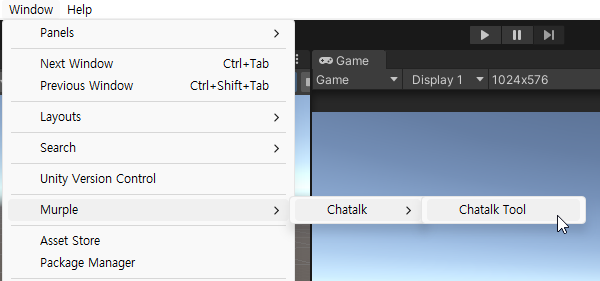
Open Chatalk window from Window -> Murple -> Chatalk -> Chatalk Tool
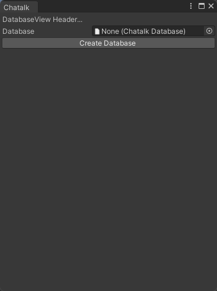
If this is first time to use Chatalk, or database asset of Chatalk is missing, you should make Chatalk database asset.
Make database asset to click Create Database button. If there is already database, please select your database.
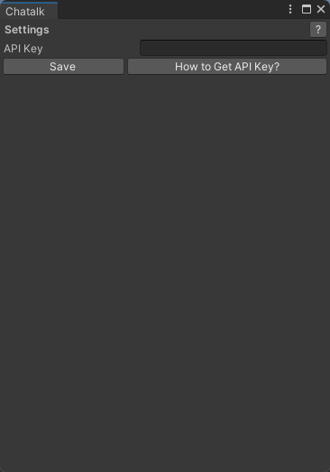
If you did not regist your Chatalk API key, the API Key input field will appear.
Enter your Chatalk API key and click the Save button to proceed.
If you do not have Chatalk API key, please read How to Get API Key? page.
UI label |
Description |
|---|---|
API Key |
Your Chatalk API key |
Save |
Save the API key and proceed |
How to Get API Key? |
Open sign up window |
? |
Open Chatalk Document |
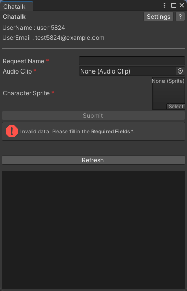
If you save valid API key, the Chatalk tool window appear. You can generate talking animation with this window.
Chatalk Info |
Description |
|---|---|
UserName |
UserName of API key |
UserEmail |
UserEmail of API key |
Settings |
Show input field to change API key |
? |
Open Chatalk Document |
Request |
Description |
|---|---|
Request Name |
name for identify each request (required) |
Audio Clip |
AudioClip that contains speech (required) |
Character Sprite |
Image(Sprite) that contains character face |
Submit |
Send request to make Chatalk animation |
Job List |
Description |
|---|---|
Refresh |
Refresh your job list |
Constraints¶
Request Name: It cannot exceed 50 characters.
Audio: Audio longer than 60 seconds is not allowed. Also, you can use only audio file that Unity Editor supports.
Image: The length of one side cannot exceed 2048, RGBA format, and read/write must be possible.
For images constraints, please refer to the image below.
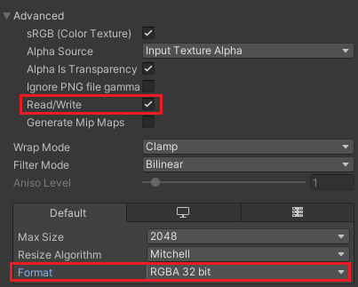
Request¶
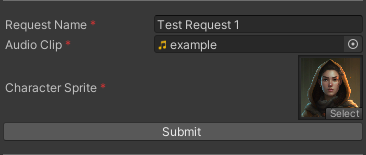
(image reference: 500 fantasy character portraits realistic human heroes)
Submit button will activate when you fill all required field(request name, audio clip and sprite).
You can send a request by clicking Submit button.
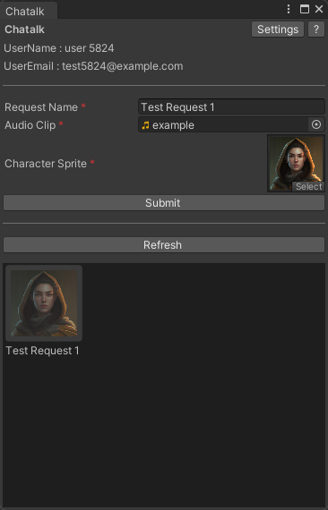 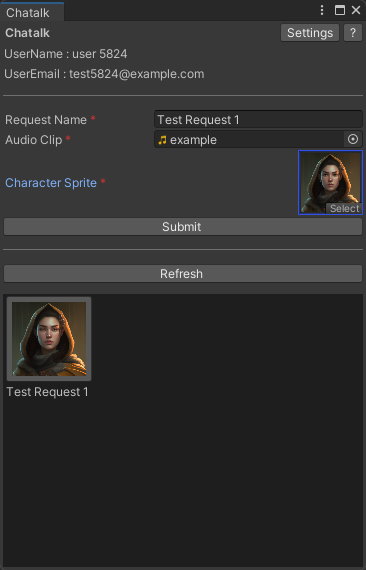
Your jobs are displayed at grid UI area. In-progress tasks appear dimmed (left), while completed tasks appear clearly (right). You can open job detail window clicking each job icon.
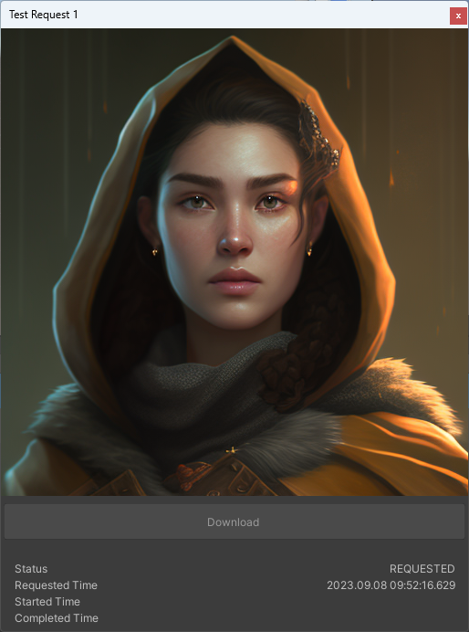 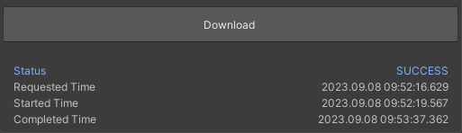
Detail window shows information of requested job.
If generation job is complete, the Download button will become active.
UI label |
Description |
|---|---|
Download |
Download mp4 video animation |
Status |
the progress of the current task. (REQUESTED, PENDING, PROGRESSING, SUCCESS and ERROR) |
Requested Time |
Time the request was submitted |
Started Time |
Time the job started |
Completed Time |
Time the job completed |
Download¶
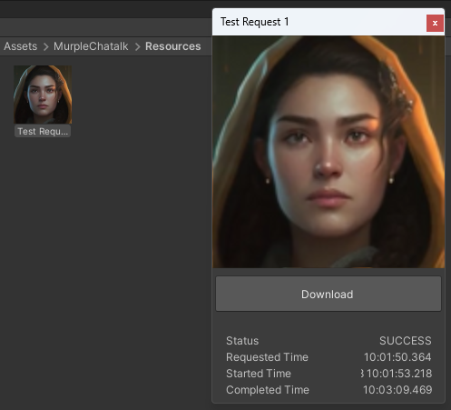
You can download your video animation to Assets/Murple/Chatalk/Resources by clicking Download button.
You can check the generated video file in Unity Editor by clicking the image above
Done! Now you can use the mp4 file as VideoClip.
If you want to find which assets are supported, read Third party support.
If you have any other questions, read FAQ.